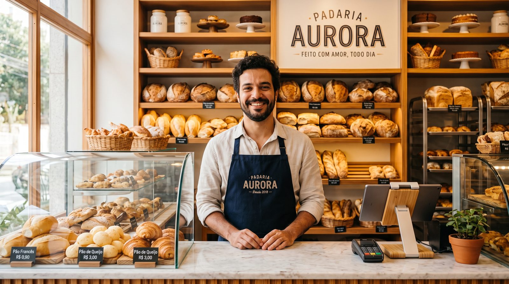

Sistema PDV para padaria: como vender mais rápido e controlar perdas em 2026
Padaria boa é movimento, e movimento, no balcão, vira fila. Um bom sistema PDV para padaria (em Portugal, o software POS ou programa de faturação) é o que separa uma manhã tranquila de um caixa travado às 7h. Este guia mostra, sem enrolação, o que importa de verdade numa padaria ou confeitaria: venda rápida no pico, venda por peso ou por unidade, controle de perdas e validade, fidelização e vários funcionários no mesmo caixa. No fim, um ranking e uma tabela comparativa para você decidir com calma.

Por que a padaria precisa de um PDV pensado para ela
Uma padaria não vende como uma loja de roupa. O ticket é baixo, o volume é alto e a rotina é puxada por dois picos: o café da manhã e o fim da tarde. No meio disso, o mesmo cliente leva pão por peso, um salgado por unidade, um bolo por fatia e ainda pede para anotar no fiado. Se o caixa é lento ou confuso, a fila cresce, o atendente erra o preço e o cliente vai à concorrência da esquina.
Por isso, escolher um sistema PDV (Ponto de Venda) para padaria não é só comprar um programa de caixa: é organizar a operação inteira do balcão à retaguarda. O sistema certo agiliza a venda, padroniza preços, registra perdas e dá visão clara do que mais sai, e do que está encalhando na vitrine perto do vencimento.
As 5 necessidades reais de uma padaria ou confeitaria
Antes de olhar marca ou preço, entenda o que a sua operação exige de verdade. São cinco pontos que aparecem em quase toda padaria e confeitaria.
1. Pico da manhã: venda rápida acima de tudo
Entre 6h e 9h, cada segundo conta. O atendente não pode parar para digitar nome de produto ou procurar preço numa lista. Um PDV de padaria precisa de frente de caixa rápida, com botões de produtos mais vendidos (pão francês, café, salgado, sonho), atalhos de teclado e finalização em poucos toques. Quanto menos cliques por venda, menor a fila.
2. Venda por peso ou por unidade no mesmo balcão
A padaria é, talvez, o comércio que mais mistura formas de venda. Pão e frios saem por quilo; salgados e doces, por unidade; bolos, por fatia; e ainda há os combos de café da manhã. O sistema precisa lidar com tudo isso sem gambiarra, idealmente com integração à balança, registrando o peso automaticamente, e com botões de produto para os itens por unidade.
3. Perdas e validade: o lucro que vai para o lixo
Em padaria, o que não vende no dia muitas vezes vira perda. Pão amanhecido, doce vencido, frios fora do prazo: tudo isso come a margem em silêncio. Um bom PDV ajuda a registrar perdas, acompanhar o giro de cada item e mostrar, com relatórios, o que produzir a mais e o que está sobrando. Controlar validade e quebra é, muitas vezes, o que transforma uma padaria no vermelho em uma padaria lucrativa.
4. Fidelização e fiado de bairro
Padaria vive de cliente recorrente, o do pãozinho todo dia, o da encomenda de bolo no fim de semana. Acompanhar esse histórico ajuda a fidelizar. E há um costume que não morreu: o fiado. Em vez do caderninho na gaveta, prefira um PDV com controle de fiado (crédito de clientes), que registra o saldo de cada um e evita a conta perdida no fim do mês.
5. Vários funcionários no mesmo caixa
Balconista da manhã, caixa da tarde, dono que entra e sai: a padaria tem rotatividade no balcão. O sistema precisa permitir vários funcionários, cada um com seu acesso, para você saber quem vendeu o quê e fechar o caixa sem dúvida. Isso reduz erro, dá responsabilidade e facilita identificar furos no caixa.
Funções essenciais de um PDV para padaria
Traduzindo as necessidades acima em recursos concretos, é isto que você deve exigir:
- Modo offline com sincronização automática. Se a internet cair no pico, o caixa não para, e sincroniza quando a conexão volta.
- Frente de caixa rápida com botões de favoritos e atalhos, pensada para alto volume e ticket baixo.
- Venda por peso e por unidade, de preferência com integração à balança e leitura de código de barras.
- Controle de estoque e de perdas, com baixa automática e registro de quebra/validade.
- Controle de fiado (crédito de clientes) e histórico de compras para fidelizar.
- Multiusuário, com acesso por funcionário e fechamento de caixa por turno.
- Relatórios de vendas por produto, por hora e por forma de pagamento.
- Pronto para a nota fiscal eletrônica (no Brasil, a NFC-e; em Portugal, a faturação eletrónica certificada).
- Hardware flexível: rodar em computador, tablet ou celular, sem prender você a um aparelho caro.
Os melhores sistemas PDV para padaria (2026)
Abaixo, uma leitura prática do mercado pensando na rotina de uma padaria ou confeitaria. Avaliamos velocidade no balcão, custo real, modo offline, venda por peso/unidade e controle de fiado.
digabloPos
O digabloPos é um PDV em nuvem moderno que encaixa quase como uma luva na rotina de padaria. O plano base é gratuito para sempre (sem prazo, sem cartão de crédito) e fica pronto em poucos minutos. Tem frente de caixa rápida para o pico da manhã, modo offline com sincronização automática para quando a internet falha, controle de fiado (crédito de clientes) no lugar do caderninho e módulos opcionais que você ativa só quando precisar. E já vem pronto para a nota fiscal eletrônica.
👍 Pontos fortes
- Plano grátis para sempre, sem compromisso
- Modo offline com sincronização automática
- Venda rápida, ideal para o pico da manhã
- Módulos opcionais sob demanda
- Controle de fiado (crédito de clientes)
- Pronto para a nota fiscal eletrônica / faturação eletrónica
👎 A verificar
- Marca mais nova que ERPs nacionais tradicionais
- Confirme a integração com a sua balança
- Confirme a emissão fiscal homologada para o seu estado/país
Sistemas nacionais para panificação
Há ERPs nacionais desenvolvidos especificamente para padarias e panificadoras, com integração à balança, controle de produção e emissão fiscal bem resolvidos. São fortes para quem tem produção própria grande e várias filiais, porém costumam ser pagos por mensalidade e podem ser mais robustos (e caros) do que uma padaria de bairro precisa no começo.
PDV genérico de varejo
Sistemas de PDV em nuvem voltados ao varejo em geral resolvem bem o caixa, o estoque e a emissão fiscal. Servem para uma padaria simples, mas nem sempre têm venda por peso integrada ou foco no controle de perdas e validade, pontos onde a padaria sofre mais. Avalie se o básico atende antes de pagar por recursos que você não vai usar.
Quer testar sem gastar nada?
O plano base do nosso nº 1 é grátis para sempre, fica pronto em poucos minutos e não pede cartão de crédito.
Criar meu caixa grátisTabela comparativa para padaria
| Critério | digabloPos | ERP de panificação | PDV de varejo |
|---|---|---|---|
| Plano grátis para sempre | Sim | Não | Parcial |
| Modo offline + sincronização | Sim | Parcial | Parcial |
| Venda rápida (pico da manhã) | Sim | Sim | Parcial |
| Venda por peso / unidade | Sim | Sim | Parcial |
| Controle de fiado (crédito) | Sim | Parcial | Limitado |
| Nota fiscal eletrônica | Sim | Sim | Sim |
| Tempo de configuração | Poucos min | Médio/longo | Rápido |
Comparação informativa elaborada em junho de 2026 com base em informações públicas. Recursos, planos e a homologação fiscal por estado/país mudam com frequência, confirme tudo nos sites oficiais, na SEFAZ e com o seu contador antes de decidir.
Em Portugal: software POS e programa de faturação para pastelaria
Se a sua padaria, pastelaria ou cafetaria fica em Portugal, o vocabulário muda, mas as necessidades são as mesmas. Por lá, fala-se em software POS e em programa de faturação, e a faturação precisa ser feita por um software certificado pela Autoridade Tributária, com emissão da fatura ou do talão. As prioridades continuam idênticas: faturação rápida no balcão, gestão de stock, venda ao peso e à unidade, contas de cliente e vários operadores.
Ou seja, ao avaliar um software POS para pastelaria, aplique o mesmo checklist deste guia. O que muda é o nome do documento fiscal e a entidade reguladora; o que não muda é a regra de ouro, um caixa que vende rápido, funciona offline e não engessa a sua operação no horário de maior movimento.
A escolha inteligente: some o custo de 12 meses (software + emissão fiscal + hardware) e teste a velocidade do balcão num pico real antes de assinar qualquer plano.
Como escolher o PDV da sua padaria (checklist)
- Cronometre o pico. Peça uma demonstração e simule uma fila de café da manhã: quantos toques por venda?
- Confirme a venda por peso e por unidade e a integração com a sua balança.
- Exija modo offline real com sincronização automática.
- Verifique o controle de perdas e validade e os relatórios por produto e por hora.
- Confira o controle de fiado e o histórico de clientes para fidelizar.
- Teste o acesso por funcionário e o fechamento de caixa por turno.
- Confirme a parte fiscal (NFC-e no Brasil; faturação certificada em Portugal) com o fornecedor e o contador.
- Some o custo de 12 meses antes de fechar, não só o preço de etiqueta "R$ 0".
Perguntas frequentes
Qual o melhor sistema PDV para padaria em 2026?
O melhor é o que agiliza a venda no pico da manhã, lida com venda por peso e por unidade, controla perdas e validade e funciona sem internet. Procure modo offline, frente de caixa rápida, integração com balança e controle de fiado. Nesta análise, o digabloPos lidera por unir plano gratuito, modo offline e venda rápida.
Existe sistema PDV grátis para padaria e confeitaria?
Sim. Alguns sistemas oferecem um plano gratuito de verdade para a frente de caixa. O digabloPos, por exemplo, tem plano grátis para sempre, sem cartão de crédito, e cobra só os módulos opcionais quando você precisar. Em Portugal, procure por software POS ou programa de faturação certificado.
Como vender por peso e por unidade no mesmo caixa?
Uma padaria vende pão por quilo, bolo por fatia, salgado por unidade e cestas como combo. Um bom PDV aceita tudo no mesmo balcão, com integração à balança para registrar o peso automaticamente e botões de produto para os itens por unidade, sem digitar preço a cada venda.
O sistema funciona se a internet cair na padaria?
Com um PDV que tenha modo offline, sim. O caixa continua registrando vendas localmente e sincroniza tudo quando a conexão volta. Isso é essencial no pico da manhã, quando a fila não pode parar por uma queda de internet.
Como controlar fiado e fidelizar clientes da padaria?
O fiado (crédito de clientes) ainda é comum em padarias de bairro. Prefira um PDV que registre o saldo de cada cliente de forma organizada, no lugar do caderninho. Para fidelizar, acompanhe o histórico de compras e identifique os clientes recorrentes do café da manhã e da tarde.
Pronto para acabar com a fila do café da manhã?
Monte o caixa gratuito da sua padaria em poucos minutos, sem compromisso e sem cartão de crédito. Depois, confirme a emissão fiscal para a sua região.
Começar grátis